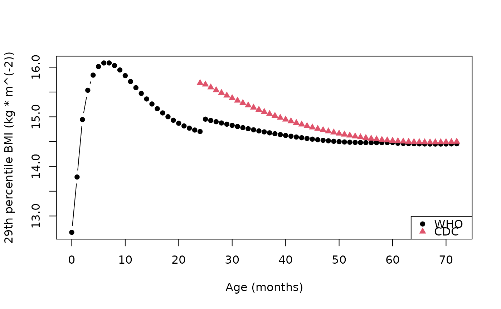

BMI for age quantile, distribution, and zscore function based on LMS data from the CDC and WHO.
Arguments
- q
a vector of quantiles
- male
integer value, 1 = male, 0 = female
- age
numeric age, in months
- source
a character string denoting the data source providing the parameters needed for the estimate. Valid values are "CDC" and "WHO". This can be set explicitly, or by using the
pedbp_pgs_sourceoption.- ...
pass through
- p
a vector of probabilities
Value
p_ method return values from the estimated distribution function.
q_ methods return values from the estimated quantile function.
z_ methods return standard scores.
Notes
CDC Recommends using WHO growth charts for infants and children ages 0 to 2 years of age in the U.S. and CDC growth charts to monitor growth for children age 2 years and older in the U.S.
References
https://www.cdc.gov/growthcharts/percentile_data_files.htm, https://www.who.int/tools/child-growth-standards/standards
Examples
# The 54th quantile BMI (kg * m^(-2)) for a six year (72 month) old female
# is
bmi <- q_bmi_for_age(p = 0.54, male = 0, age = 72.0)
all.equal(p_bmi_for_age(q = bmi, male = 0, age = 72), 0.54)
#> [1] TRUE
all.equal(z_bmi_for_age(q = bmi, male = 0, age = 72), qnorm(0.54))
#> [1] TRUE
# Find the 29th percentile for females from ages 0 through 6 years in three
# month increments. Sourcing the only CDC will generate a warning;
# suppressed in this example.
ages <- seq(0, 72, by = 1)
bmi_29 <-
data.frame(
age = ages
, "CDC" = suppressWarnings(q_bmi_for_age(p = 0.29, male = 0, age = ages, source = "CDC"))
, "WHO" = q_bmi_for_age(p = 0.29, male = 0, age = ages, source = "WHO")
)
plot(
x = bmi_29$age
, y = bmi_29$WHO
, col = 1
, pch = 16
, xlab = "Age (months)", ylab = "29th percentile BMI (kg * m^(-2))"
, type = "b"
)
points(x = bmi_29$age, y = bmi_29$CDC, col = 2, pch = 17, type = "b")
legend("bottomright", col = 1:2, pch = 16:17, legend = c("WHO", "CDC"))
